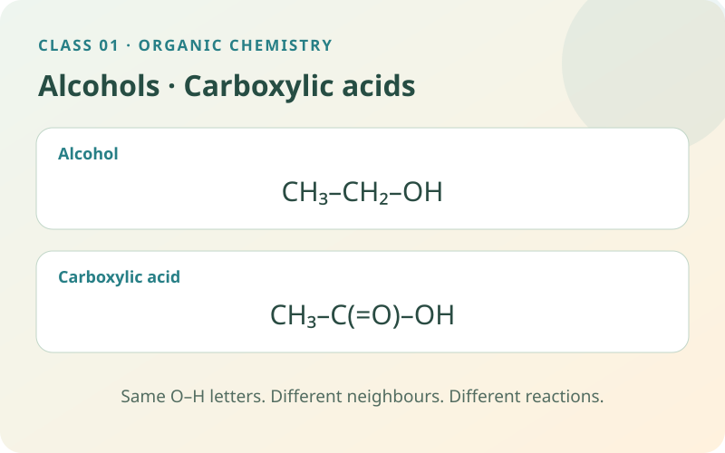

Discover why two molecules containing O–H can behave differently. Read their structures, compare ethanol with ethanoic acid and connect the chemistry to fuels and vinegar.
Read → model → explain6 self-study checksUse the apparatus directly

By the end of this class, you should be able to…
Read a structural formula and recognise an alcohol or carboxylic acid.
Explain ethanol production and its conversion to ethanoic acid.
Predict a carboxylic acid’s reactions with a base or carbonate.
01
Start with atoms, bonds and functional groups
Organic chemistry studies carbon compounds. In these examples carbon, C, forms four covalent bonds; oxygen, O, normally forms two; hydrogen, H, forms one. A covalent bond is a shared pair of electrons. A line represents one bond, and a double line, =, represents two shared pairs.
A structural formula shows which atoms are connected. CH₃–CH₂–OH is a condensed structural formula: the small ₃ and ₂ count hydrogen atoms attached to a carbon. They do not multiply every atom after them. A functional group is a particular arrangement of atoms responsible for characteristic chemical reactions.
Remember and explain whyRead the connections, not just the letters. A shared group can behave differently when its neighbours change.
02
Alcohols: recognise –OH in the right setting
The simple alcohols in this class contain a hydroxyl group, –OH, attached to a saturated carbon atom: that carbon has single bonds. This bonded –OH is not a free hydroxide ion, OH⁻. Ethanol is CH₃CH₂OH, also written C₂H₅OH. Methanol, CH₃OH, has one carbon; propan-1-ol, CH₃CH₂CH₂OH, has three.
The ending –ol helps you recognise an alcohol name. The O–H group lets short-chain alcohol molecules interact strongly with water through hydrogen bonding: an attraction involving hydrogen attached to oxygen and a neighbouring oxygen’s electrons. Ethanol mixes with water, while longer carbon chains generally make alcohols less water-soluble. Ethanol is approximately neutral in the usual dilute-water classroom comparison.
Remember and explain why–ol suggests an alcohol; –OH must be read as part of the whole structure.
03
Ethanol in fermentation, fuels and vinegar
Fermentation uses enzymes in yeast to convert glucose into ethanol and carbon dioxide under oxygen-poor conditions. An enzyme is a biological catalyst: it speeds a reaction without being consumed overall. The simplified equation is C₆H₁₂O₆ → 2C₂H₅OH + 2CO₂. The numbers in front are coefficients, counting relative numbers of molecules.
Industry can also make ethanol by adding water to ethene: C₂H₄ + H₂O ⇌ C₂H₅OH, with suitable catalyst, temperature and pressure. The double arrow means the reaction can proceed in both directions. Ethanol can be used as a fuel or solvent, a liquid that dissolves another substance. Oxidation of ethanol can form ethanoic acid. For this particular conversion, oxidation can be described as gaining oxygen and/or losing hydrogen; it is not a rule that every alcohol gives the same acid.
Remember and explain whyFermentation makes ethanol; oxidation of this primary alcohol can make ethanoic acid.
04
Carboxylic acids: the entire –COOH group matters
A carboxyl group is –C(=O)–OH, commonly shortened to –COOH. The same carbon is double-bonded to one oxygen and single-bonded to an O–H group. The C=O part is a carbonyl group. This complete arrangement makes a carboxylic acid different from an alcohol, even though both contain O–H.
Ethanoic acid is CH₃COOH. Its name counts both carbon atoms, including the carbon in –COOH. Methanoic acid, HCOOH, has one carbon; propanoic acid, CH₃CH₂COOH, has three. Ethanoic acid is weak in water because only a proportion of its molecules donate a proton, H⁺. In water H⁺ is hydrated; the simplified equation CH₃COOH ⇌ CH₃COO⁻ + H⁺ shows the acid and its ethanoate ion. Weak describes partial ionisation; dilute describes a small amount of acid per solution volume.
Remember and explain why–COOH is one complete carboxyl group. “Weak” and “dilute” describe different things.
05
Use reactions to distinguish the families
A carboxylic acid neutralises a suitable base, forming a salt and water. With sodium hydroxide: CH₃COOH + NaOH → CH₃COONa + H₂O. CH₃COONa is sodium ethanoate. Neutralisation means acid and base react; it does not mean any chosen mixture must finish at pH 7. pH measures acidity; pH 7 is neutral for water at about 25 °C.
An acid also reacts with a carbonate or hydrogencarbonate to release carbon dioxide. Effervescence means visible gas bubbles; bubbles alone do not identify the gas. Carbon dioxide turns limewater milky in its standard test. Ethanol does not show the same acid–carbonate effervescence in this ordinary comparison. Its bonded hydroxyl group is not supplying hydroxide ions like sodium hydroxide.
Remember and explain whyAcid + carbonate → salt + water + carbon dioxide. The structure helps explain the observation.
06
Connect the families without mixing them up
Alcohols and carboxylic acids can react together to make esters. This is the bridge to the next class: alcohol + carboxylic acid ⇌ ester + water under suitable acid-catalysed conditions. A catalyst provides a faster pathway; it is not the alcohol or the acid being converted into the ester.
Use the molecular work mat below to compare ethanol and ethanoic acid. Move the formula into position, select its characteristic group and inspect its behaviour. Record both examples before explaining the difference. The model highlights a structure; it does not simulate the speed or extent of every real reaction.
Remember and explain whyStructure → family → characteristic behaviour. Explain why before memorising a name.
This is a structural model. Drag the selected formula onto the work mat, click its characteristic functional group and use the magnifier. Record ethanol and ethanoic acid and compare their behaviour. You can also select an object and its destination, or use the keyboard; Help with this step demonstrates one action.
07
Choose an investigation
Make a prediction, choose the conditions and use the apparatus on the bench. Drag equipment into place, turn switches and watch the reaction. Need a hand? Use Help with this step. Record your evidence before answering the explanation question.
Switch investigations here. Your progress and notebook stay available while this page is open.
Preparing your experiment…
VIRTUAL LAB
YOUR BENCH
Choose conditions Sample, quantities and equipment
Use the equipment directly on the bench. Drag, click or tap the highlighted apparatus.
YOUR EVIDENCE
Record and compare your observations.
Observations from the current experiment
Your notebook stays while you explore this page. Reloading clears it. Practical notes and lesson checks are not sent to the teacher.
08
Use the evidence
09 · CHECK THE IDEAS YOU JUST LEARNED
Practise this class.
Every question uses an idea explained above. Try it, read the feedback and return to a worked example if needed. These short practice checks and the practical notebook stay on this page; they are separate from recorded Test yourself sessions.
Use the six practice questions above for this class. Once you have studied the Organic Chemistry unit, use its full revision simulator. Its 80 questions also cover hydrocarbons, combustion, cracking and addition polymers. Read the unit preparation and worked examples before attempting unfamiliar areas. Test yourself uses the existing teacher recording connection.